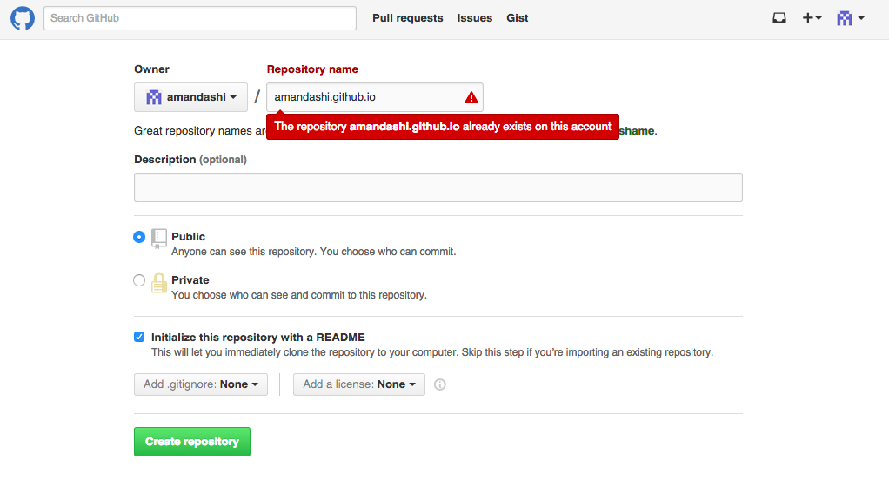
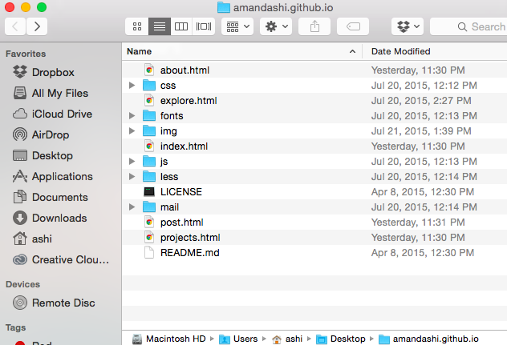
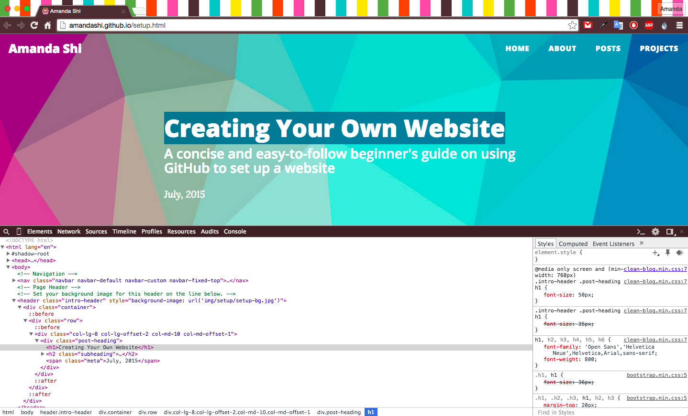

GitHub provides one free site per user. You can create a personal blog, site for your organization, basically anything, and here’s how:
Before You Start
- Install Git if it's not on your computer already.
- Make a GitHub account.
- Be somewhat familiar with Terminal (Command Prompt on Windows) aka know “cd.”
- Have a text editor ready. I recommend Sublime.
Actually Setting Up Your Site
- Create a new repository named username.github.io, where username is your username on GitHub. 
- Open Terminal and cd into the folder you want your local directory to be. Desktop should be fine for now (you can always move it somewhere else later).
- Clone your repository. This will create a new folder on your desktop.
- Enter your new folder and add an index.html file. You’re creating a new .html file in your folder with its contents controlling what displays on your site. You’ll be able to replace this later with hopefully something slightly more interesting.
- Add, commit, and push your changes (the “Hello World!” text in our case). These git commands translate the changes you’ve made locally (in your username.github.io folder) onto your site.
- Your site is all set up! Go to http://username.github.io to view it!
Amandas-MacBook:~ ashi$ cd Desktop
Amandas-MacBook:Desktop ashi$ git clone https://github.com/username/username.github.io
Amandas-MacBook:~ ashi$ cd username.github.io Amandas-MacBook:~ ashi$ echo "Hello World!" > index.html
Amandas-MacBook:~ ashi$ git add . Amandas-MacBook:~ ashi$ git commit -m "Initial "Hello World" commit" Amandas-MacBook:~ ashi$ git push origin master
Making Your Site Look Nice
- Find a theme you like, download it, unpack it, and drag its contents into your username.github.io folder. 
- Play around with the .html and .css files. You don’t have to be an expert on HTML/CSS to do this. Here’s a great resource. Remember to add, commit, and push any changes you make in your folder.
- If you want to make a change to a certain text/picture/etc but you’re not sure where or in which .html or .css file you need to be making the change in, highlight the item, right click, and select Inspect Element. You will now be able to see the possible changes you can make to the item and in which .html and .css files. 
Other Helpful Things
- Preview your changes locally. Open .html files with your browser. Then by saving changes you make locally and refreshing your browser, you can preview what the generated site will look like in your browser locally.
- Add a favicon. Download or design an image, run it through a converter, drag the converted image (saved as favicon.ico) into your username.github.io folder, and copy this text into the head section of your .html files:
<link rel="icon" href="favicon.ico?v=2" type="image/x-icon" />